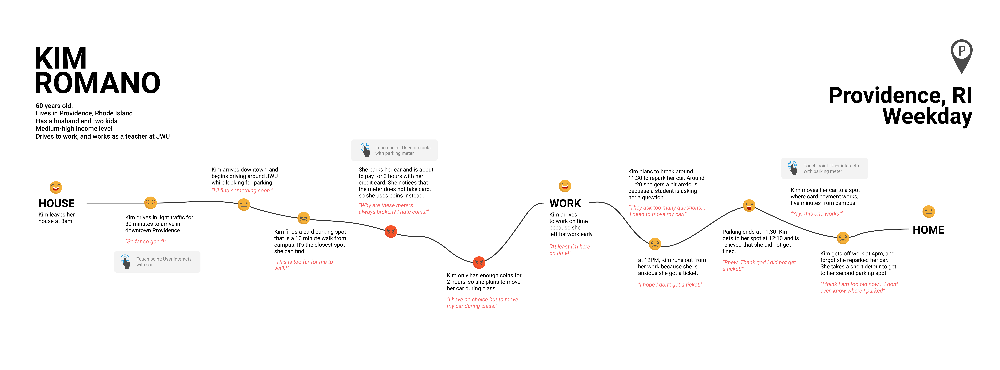
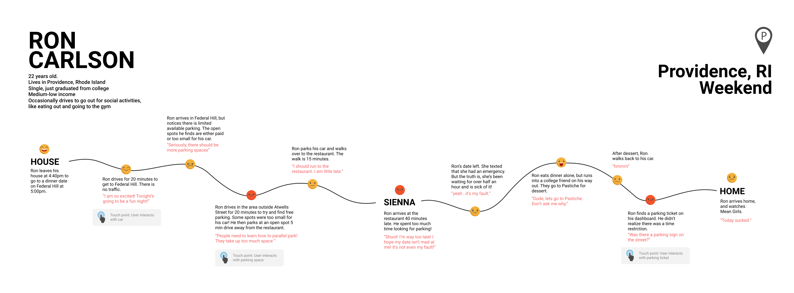
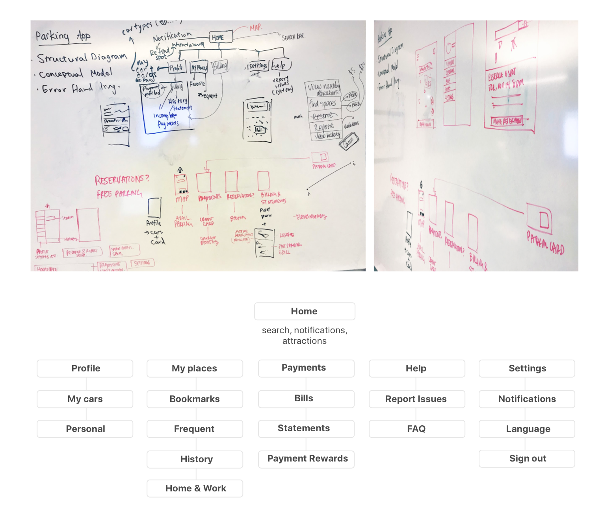
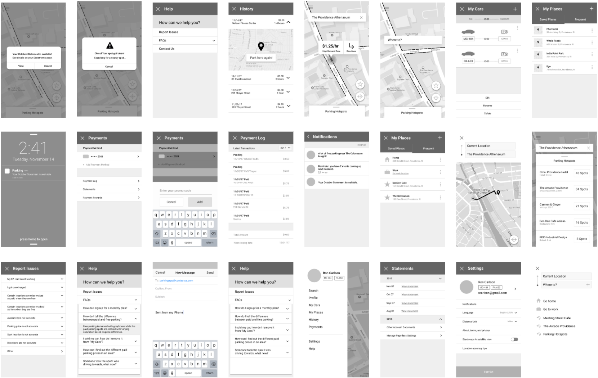
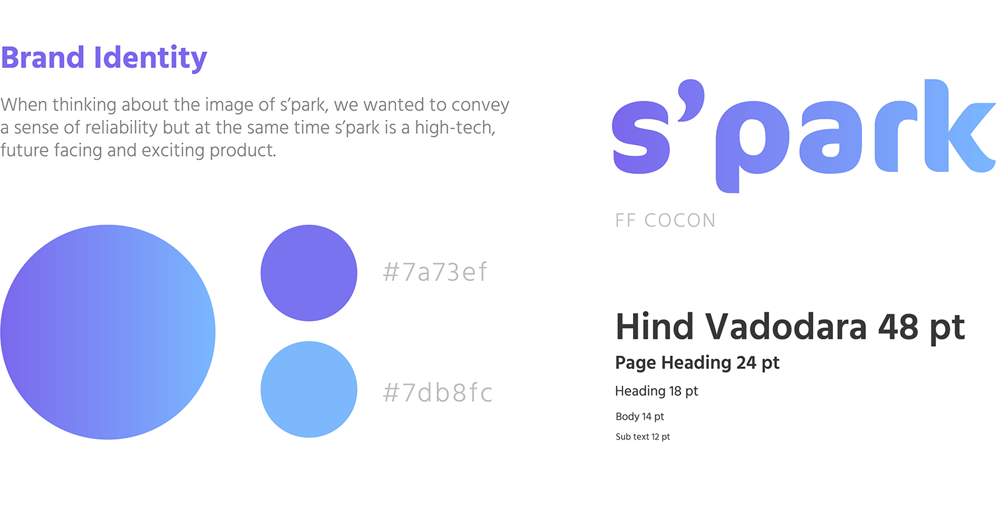
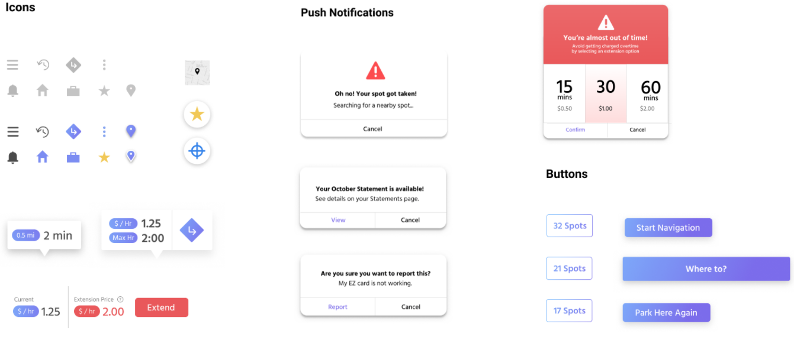

S'park
Parking App Design Sprint, Fall 2017
S'park is for drivers. It allows you to find, pay for and track the status of parking spots near your destination.
"Mayor Jorge O. Elorza revealed a proposed five-year capital improvement plan Tuesday that calls for spending between $16 million and $34 million a year on repairs to sidewalks, sewers, bridges and other infrastructure improvement projects." – John Hill, Providence Journal Jan. 2017
The initial assignment was to document any creative process and map the journey of a person navigating that process. In response to recent developements in the expansion of infrastruture improvements in Providence, I observed the task of "looking for parking." I pitched this idea to the studio the following week and formed a group to persue the project.
Conceptual Models
We looked into existing services with mental models that our app could leverage. My role was to create survey questions that would help us better understand the people we were designing for to narrow our focus. I came up with a list of questions responding to certain pain points that surfaced in an initial brainstorm session, followed by a review from the studio. Here is a selection of questions we broadcasted the greater Providence community: How can people get to their destination in the most efficient way? What are some ways we can allow people to make choices and decisions that are not just transactional? What are common patterns of choice and decision making? How can people use such patterns to automate their lives in a more effective way?
Interviews & Surveys
We interviewed 15 Providence drivers and collected 32 survey responses from non-local drivers. We learned that most people have had issues with unpaid and expired meters, people try to avoid paid parking when there is free parking, if people pay with card, they tend to pay for the estimated maximum time, and people generally use street parking either infrequently or very frequently, with very few in-between. Finally, the most important factor when looking for street parking is low pricing and proximity of parking spot to their destination.
These survey results allowed us to identify certain scenarios to keep in mind moving forward, such as when a person tries to reserve a spot that is already taken, when they are new to an area and do not know where the paid and free parking spots are, when they cannot tell the difference between paid and free parking, when they have more than one car and wish to register all of them, when they browse parking spots and attractions before they start driving to their destination, or when they have overdue payments.


Journey Maps
Persona 1: Kim is willing to pay for parking if the spot is close to her desination.
Persona 2: Ron would rather park further to avoid paid parking, but needs to keep track of time zones and restricted areas. Both run into common issues that come up involving parking meters, color zones and finding parking spots.


Information Architecture & Wireframing
After the research phase, our group came together to re-evaluate our objectives. Given the wealth of popular navigation and transportation apps, how will S'park stand out? To meet a unique and targeted customer need, we brought our focus into creating a tool to help people discover parking spaces near them more quickly.
Our app will achieve the following objectives by providing real-time feedback on parking availability in highlighted locations, accurately displaying parking prices, merging existing hardware such as the EZ-pass and parking meters with our digital interface to standardize the overall payment experience, enabling multiple payment methods and an option for time extensions, and adjusting parking prices based on availability of spots.
Next, we mocked up screens of the key features we were to include in the app as we imagined what the app would look and feel like.


Brand Identity
We came together to create a style sheet before allocating screens for each person to wireframe in preparation for a group review the next day. As our primary brand colors, we chose a cool blue and vibrant purple. Blue is for familiarity and reliabiliy, and purple is representative of something trendy and fresh.
Here is our prototype of the S'park app, consisting of screens that encapsulates the primary features we designed. The following recording is of one of our team members using S'park to find street parking on Thayer Street.
Next Steps!
Popular navigation apps such as Uber and Google Maps help get you to Point B. Our app focuses on solving common paid parking problems, with the aim of helping facilitate a money and time saving experience after arriving at their destination. With each registered person's vehicle infomation, the next step for S'park is to establish personalized parking recommendations based on the size of their car, parking preferences and learn such patterns. The current payment flow closely follows the EZ pass model. In the future, the app would be connected to smart parking meters that detect every S'park card for length of time parked, fluctuating prices of spots based on demand, popularity, and availability and processing payments. Dynamic price changes also opens possiblities of sustainability incentives for electric and energy efficient cars as well as shared car services.